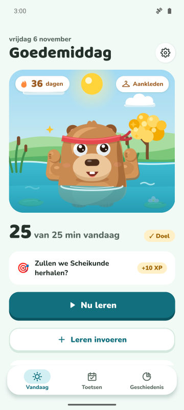
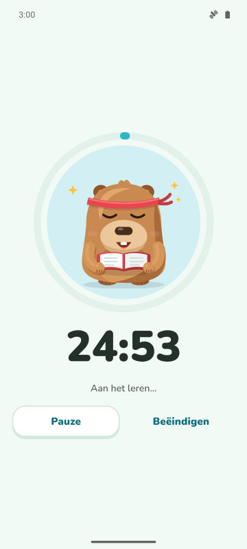
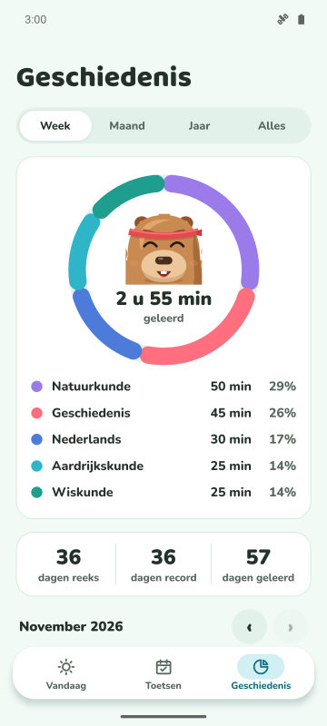
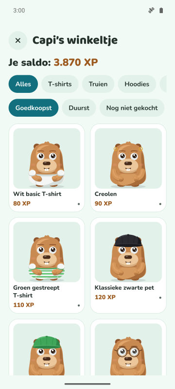

Dagdoel en reeks
Kies hoeveel minuten je per dag leert. Doel gehaald: je reeks groeit en je capibara viert feest.
Focustimer, dagelijkse reeks en aftellen naar je toetsen. Hoe meer je leert, hoe blijer en sterker je capibara wordt.
Binnenkort op Google Play
Gratis voor Android. iPhone later.

Kies hoeveel minuten je per dag leert. Doel gehaald: je reeks groeit en je capibara viert feest.
Een timer met drie modi. In de beschermde modus verschijnt de capibara over de apps die je wilt vermijden.
Voeg je toets toe en zie hoeveel dagen het nog is. Elke dag krijg je een missie met het vak dat je het meest nodig heeft.
Verdien XP met leren en ruil die in voor kleding en accessoires. Feestdagen en je verjaardag worden ook gevierd.



Ja. De app is gratis met advertenties. Premium (optioneel) haalt de advertenties weg en ontgrendelt de beschermde modus, stille meldingen tijdens het leren en 3 reeksschilden per maand.
Nee. Je gegevens blijven op je telefoon. Als je wilt, kun je ze synchroniseren met je eigen Google Drive.
Ja. Voeg de datum toe, volg het aftellen en krijg herinneringen 7, 3 en 1 dag van tevoren.
In Forest plant je bomen. In CapyFoco zorg je voor een capibara die meegroeit met je leren, met dagelijkse reeks, doelen en aftellen naar toetsen in één app.
Voorlopig alleen Android. Een iPhone-versie staat gepland.